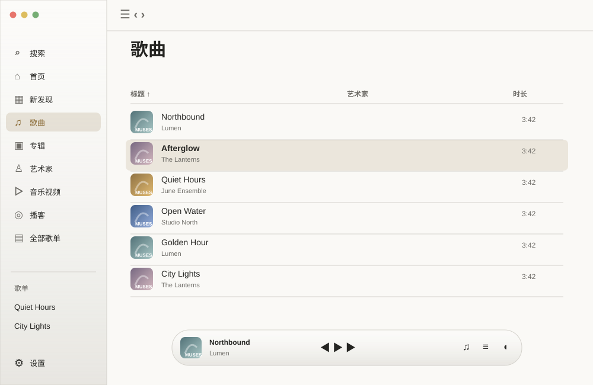
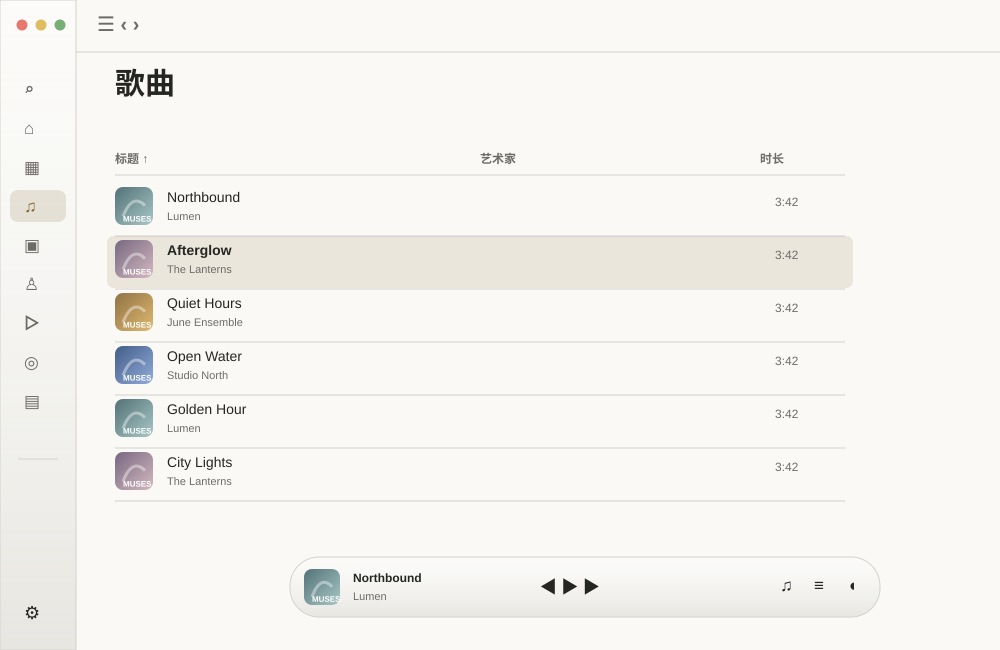
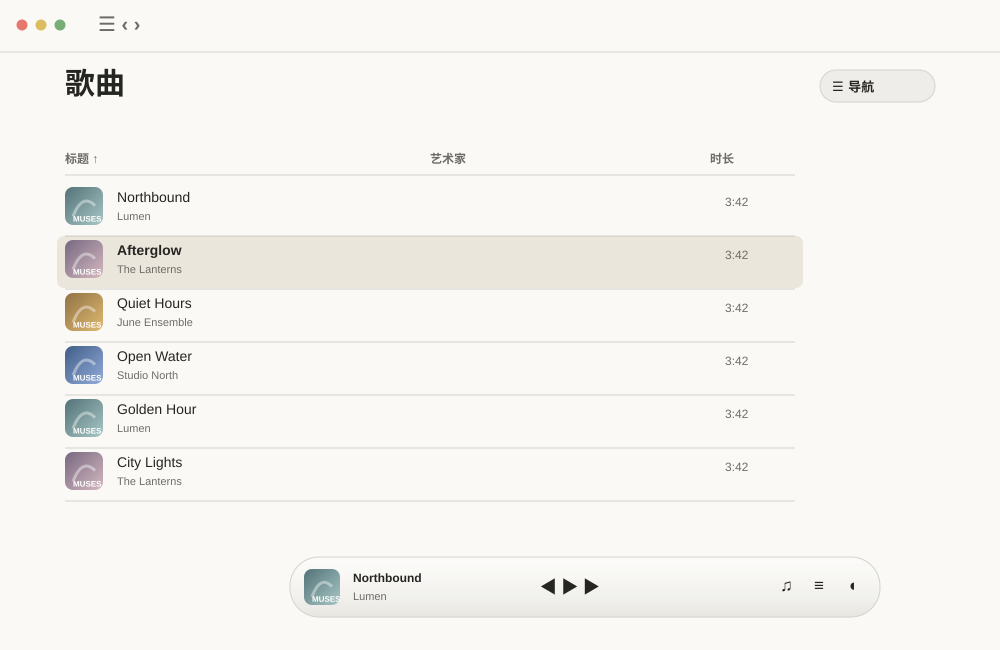
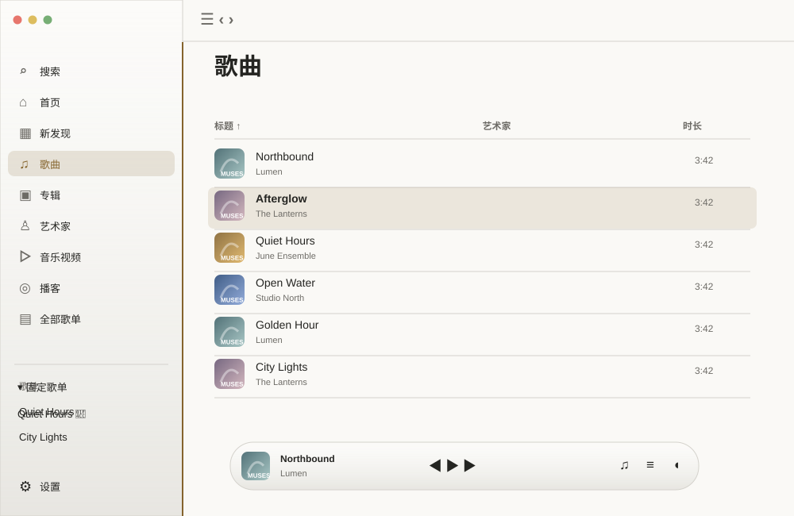
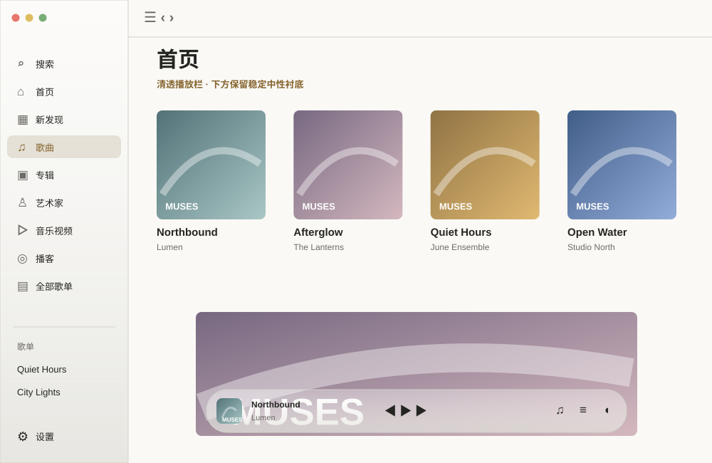
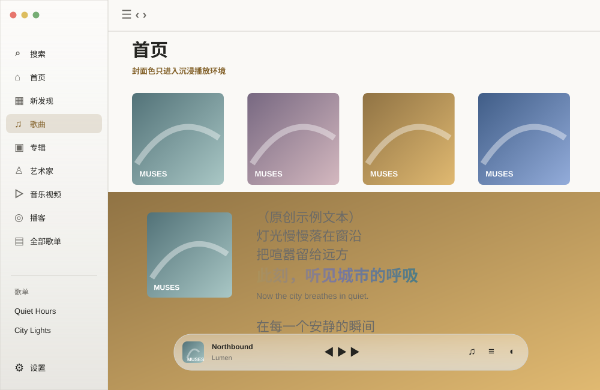
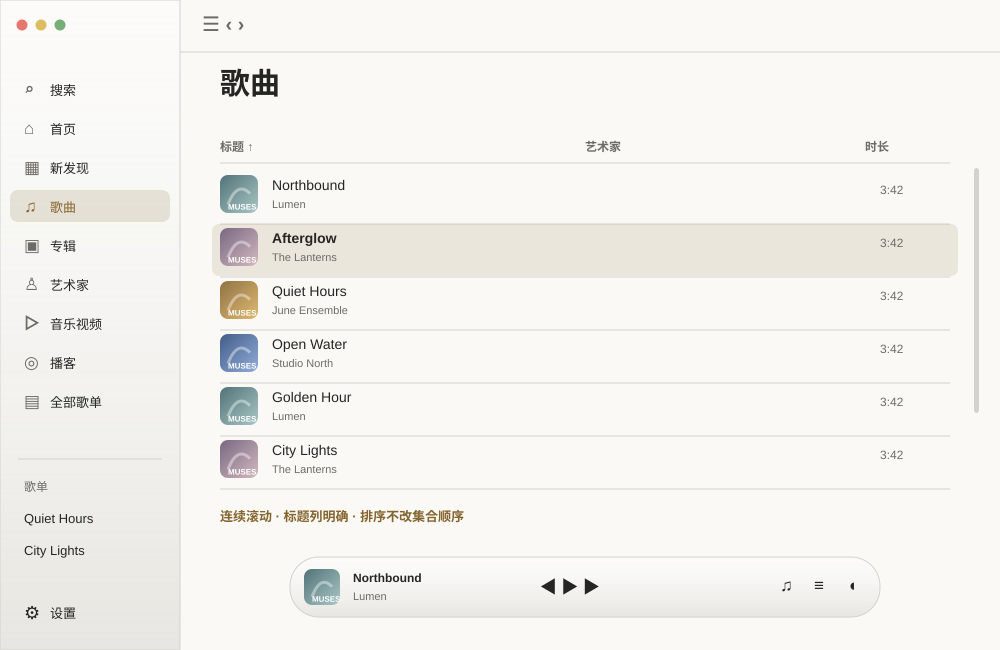
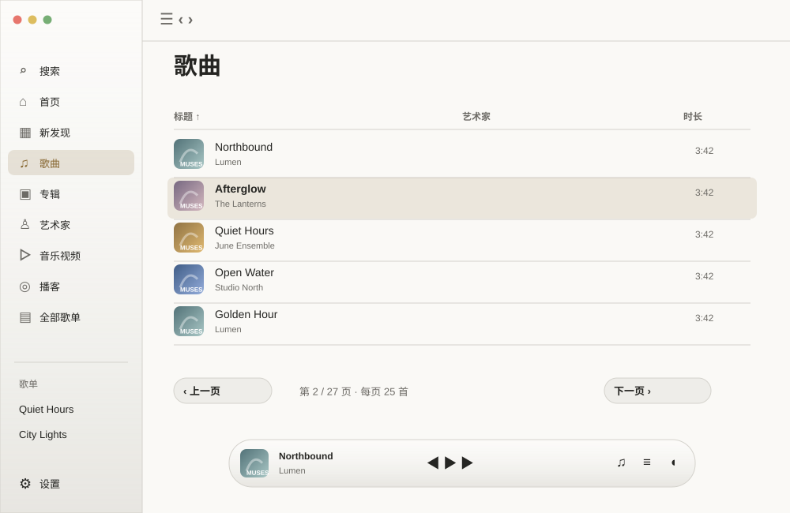

Muses · 256 样例总览
01A原生 NavigationSplitView + sidebar List，内容历史独立保留；系统负责栏宽与滚动边缘，推荐
01B保留图标轨道但用 AppKit split view 管理布局；更接近现状，桥接维护成本较高
01CApple Music 双栏，紧凑时完全隐藏边栏；阅读空间更大，目的地需工具栏入口
01D可调整宽度的收藏导航栏，歌单固定区可折叠；重度歌单用户更方便，初次使用更复杂05A系统导航玻璃 + regular播放控制玻璃，内容不加玻璃，推荐
05BPlayerBar用clear玻璃但增加自适应中性衬底；封面环境更明显05C仅窗口原生区域使用玻璃，PlayerBar为轻薄实色胶囊；更稳健
05D沉浸播放允许封面色玻璃，浏览仍中性；表达力强，需逐封面验证 
14A原生Table + 可见列标题 + 虚拟化滚动，推荐
14B分页用于辅助模式，明确每页数量和总数，排序显示当前方向14C紧凑List，列减少到封面/标题/作者/时长，更多进入检查器14D双模式：信息表格/紧凑队列列表，分别记忆列宽与排序15A自适应方形封面网格，二行标题、稳定更多动作，推荐15B小封面+横向文字网格，提高桌面密度15C用户缩放封面尺寸，原生toolbar slider控制列数15D按歌单段落分组封面墙，保持原始顺序；仅用于有明确分组的数据 16A原生方形专辑/圆形艺术家列表 + 独立身份确认提示，推荐16B左列表右详情检查器，适合大量目录16C专辑按年份分组，艺术家按字母分组，稳定ID不按名称合并16D未确认内容进入资料库核对入口，主目录仅展示可靠对象 17A16:9缩略图网格 + 视频时长 + 视频文案，推荐17B视频原生列表，封面在左、频道与时长在右17C精选横图hero + 下方视频表格；强调浏览但避免空视频槽17D音乐与视频在同一集合用媒体种类过滤，独立视频目的地保留快捷入口 18A统一ContentUnavailableView与明确搜索/导入CTA，推荐18B空态显示最近可收藏项，减少往返18C收藏分歌曲/歌单/专辑筛选，固定另以图标标识18D固定以首页货架呈现，收藏继续列表；减少导航层级但要保留入口 19A方形封面，标题作者在外，来源/同步状态缩为单个标记，推荐19B原生列表模式作为默认，封面网格可选19C顶部最近歌单货架 + 其余紧凑表格19D分Muses/YouTube两组，说明写入权限但不重复技术标签 20AApple Music式封面+信息，播放为主，同步进入更多，推荐20B窄封面header + 原生toolbar动作，为表格保留空间20C封面背景只延伸到标题区，正文中性；更具个性20D双栏详情，左固定集合身份、右完整歌曲；宽窗高效，窄窗需折叠 21A一个原生sheet内分段选择创建/导入，推荐21B添加菜单直接列三种动作，跳过选择sheet21C单URL入口自动识别视频/歌单，另有创建按钮21D空歌单列表提供内联输入，复杂导入仍用sheet 22A原生sheet，URL即时校验，进度在正文、主按钮稳定，推荐22B多步骤来源预览/选择项目/确认导入；信息更清楚但耗时22C单页渐进展开，链接解析后展示名称/数量/目标22D批量URL列表，逐项进度和可重试失败；适合重度导入 23A搜索或链接统一原生sheet，选择后明确本地/远端目标，推荐23B右侧添加检查器，保留歌单上下文23C直接粘贴链接生成待添加行，最终确认统一提交23D搜索结果原生菜单添加，复杂权限变更单独说明sheet 24A变化摘要+可展开逐行差异+明确方向确认，推荐24B左右本地/YouTube对照表，冲突逐项选择24C原生步骤sheet：获取/比较/选择/完成24D只展示冲突，其余变更折叠；适合长歌单但仍可查看完整差异 25A删除本地/删除远端分别命名，版本历史原生双栏，推荐25B删除预览列出受影响对象，保留恢复入口25C版本按时间线展示，选中显示新增/移除/顺序变化25D紧凑版本列表 + 弹出比较sheet；占空间小但多一步 26A主内容搜索页保持稳定顶栏，原生搜索框+清除，推荐26B全局toolbar searchable，页面展示结果和来源26CSpotlight式快捷面板作快速入口，详细搜索仍主窗口26D搜索页左结果类型右结果列表；多来源效率高但占宽 27A来源segmented Picker + 类别菜单，选中状态原生，推荐27B来源与类别分别toolbar菜单，减少横向占用27C结果分组标题直接跳转类别，筛选只保留来源27D一行可组合过滤标签，清除全部始终可达；灵活但需控制复杂度 28A结果分组各显示少量项+查看全部，详情使用主历史，推荐28B原生统一Table按类型排序，适合键盘搜索28C歌曲紧凑列表、专辑与艺术家小货架；保留类型图形28D结果列表+预览检查器，选中展示收藏/播放/打开；避免频繁页面跳转 29A节目方封面网格，详情为原生分集列表，推荐29B左节目List右分集Table，桌面重度使用更快29C首页继续收听分集货架，关注页继续目录29D按未播/进行中/已完成筛选，进度作为副标题而非重装饰 30A频道列表 + 明确只读/管理权限状态，推荐30B订阅作为发现筛选，频道详情显示长视频与Shorts分段30C频道方卡，Shorts保持纵向媒体比例而不改播放身份30D两栏频道/内容布局，刷新和过期时间在内容标题区 31A原生分段范围 + 4个轻量统计 + 可折叠热力图，推荐31B默认最近收听列表，洞察放次级入口31C热力图/数据表共用选择状态、清晰图例，保留强辅助模式31D按天时间线与周总结，弱化小时热力图；更直观但少了精细洞察 32A原生表格按时间分组，回放使用该组上下文，推荐32B紧凑封面时间线，单独显示播放时长与完成度32C最近收听合并连续重复条目，可展开每次事件32D清除使用范围预览和明确确认，统计保留/清除范围可读 33A原生inspector风格，当前/Up Next/历史三段明确，推荐33B当前曲固定在顶部，三段用折叠标题，减少滚动33C队列与历史分段Picker，但保持三类数据独立33D窄窗将队列转原生sheet，宽窗inspector；播放栏不挤压 34A原生List重排柄、完整键盘菜单，Smart Shuffle解释popover，推荐34B多选移动到分组菜单，减少拖拽依赖34CUp Next分组卡仅标题轻量玻璃，曲目保持原生行34D智能随机开关放队列标题菜单，显示生效范围而非装饰图标 35AApple Music式响应式浮动胶囊，封面/运输/辅助三组，推荐35B原生窗口底部播放区域，玻璃由系统结构处理35C保留668胶囊但小窗折叠辅助动作进更多菜单35D全宽薄播放栏，额外功能进右侧popover；密度最高但个性较少 36A原生Slider语义，时间与剩余时间清晰，模式显示可读状态，推荐36B胶囊顶边细进度但hover扩大可拖区域，键盘访问保留36C进度popover用于精确跳转，主条保持轻量36D沉浸态大进度、浏览态小进度，两者共享状态与明确值 37A原生Slider + 独立输出Menu，应用音量和系统输出范围明确，推荐37B保留刻度音量但加强键盘/VoiceOver值与全宽点击37C音量popover横向布局，输出另有右侧入口37D按住Option展开精确百分比与设备；普通点击简洁，但隐藏能力需help 38A封面居中，歌词打开变两栏；工具栏返回为唯一主退出，推荐38BApple Music左封面右歌词，空歌词仍给搜索恢复38C封面全屏环境保持克制，信息与运输固定底部安全区38D窄窗歌词叠加于中性渐变阅读区，避免封面与文字争空间 39A保留黑胶作为Muses可选个性，系统Reduce Motion静态，推荐39B黑胶仅Now Playing选项切换，设置显示预览39C封面与黑胶同尺寸轴线，过渡只透明淡入39D取消旋转，只保留圆形封面；电量和阅读更稳，但表现力降低 40A模式和翻译放单一原生选项菜单，原文/译文层级明确，推荐40B歌词工具栏单独显示来源与同步状态，偏移在更多中40C纯歌词阅读用系统文本风格，当前句仅金色强调40D保留封面多色当前句，但其他文本中性；每张封面均验证对比度 41A原生双栏：紧凑搜索顶部、候选列表、正文预览、固定确认，推荐41B搜索一步、预览确认一步；窄窗好用但切换多41C搜索与结果同页，候选展开内联预览41D将搜索参数折叠为高级选项，默认仅歌曲/作者，AI名称和作用明确 42A视频保留原始比例，控制组靠角落原生玻璃，关闭明显，推荐42B独立可缩放视频窗口作为默认，主窗口只保留回归入口42C主窗口视频+评论原生inspector，视频画面不被框饰42D全屏视频自动隐藏辅助控件，Esc和鼠标回显；需系统媒体交接验证 43A章节原生Popover列表，评论trailing pane独立滚动，推荐43B章节与评论共用检查器的分段选择，不叠加两套面板43C章节时间轴标记+列表，需真实时间戳而非猜测43D评论失败给唯一明确恢复入口，回复内联分页；不得扩为写评论 44A原生Form信息行，技术详情折叠、输出独立分区，推荐44B播放检查器附加音频信息，减少嵌套sheet44C概览显示来源/格式/设备，展开全部元数据44D频谱仅沉浸态展示，信息sheet只显示事实；降低信息页视觉负担 45A原生带中性值Slider和刻度，底部原生预设Picker，推荐45B保留曲线直接拖动，补齐键盘频段选择与精确值输入45C左预设List右均衡器，预设保存用名称和覆盖预览45D紧凑模式仅预设，展开高级显示10频段；方便多数用户 46A迷你播放器保留单一玻璃胶囊，菜单栏popover一层原生表面，推荐46B迷你播放器加入小方封面，控件随宽度折叠46C菜单栏仅运输与曲目信息，更多打开主窗口46D桌面歌词独立无框阅读区，可锁定点击穿透；编辑时有明确退出和定位 47A所有曲面统一心形收藏；菜单按播放/组织/信息/外部动作分组，推荐47B全部用星形“喜欢”，需统一名称与迁移用户认知47C常用动作快捷行，其余原生菜单，保留完整键盘入口47D分享仅YouTube/YouTube Music/系统分享，更多社交项进子菜单 48A元数据原生Form；笔记与书签统一暂存、保存一次，推荐但需行为方案批准48B保留立即保存，书签分区明确“即时生效”，取消改为关闭48C笔记作为右检查器，书签原生列表及时间输入48D编辑页分基本/高级，两者同一提交；书签编辑独立原生sheet 49A原生类别List + Form，动作使用glass/glassProminent，推荐49B保留替换边栏，但正文标题改系统层级，宽度响应式49C独立Settings scene，主窗口播放不断；会改变现有导航契约49D单页原生Form带分组锚点；更简单但10类内容很长 50A系统原生Picker/Toggle，权限状态旁唯一操作，推荐50B开关只表达偏好，系统授权另行明确提示50C桌面功能每行含一句说明和预览popover50D语言变更显示即时预览并保留原位置；不重建整个导航 51A快捷键原生录制控件+冲突提示，手势图解popover，推荐51B命令列表可搜索，每条显示当前快捷键51C常用与高级分段，高级折叠系统权限说明51D手势演示静态图+文字，Reduce Motion一致，不用持续动画 52A音频品质与视频偏好分行，容量状态与清理范围明确，推荐52B自动/省流量/高品质主选项，具体codec在详情52C缓存概览条+可展开分类，清理先预览保留范围52D预缓存开关展开范围和容量，只对当前来源解释生效情况 53A主题原生segmented Picker，字体分系统/经典，推荐53B系统默认为主，精确字体藏高级菜单53C显示三张实时样例：标题/曲目/歌词；便于判断字号53D独立阅读偏好只改歌词，chrome始终系统字体 54A区分会话已保存/频道待确认/配置不可用，权限独立分区，推荐54B账户标题使用中性“已保存账号”，频道加载成功后替换54C连接状态卡仅显示一个结论，失败详情可展开54D按可读/可写能力列原生状态行，升级授权操作解释明确 55A专用原生同意sheet固定来源，状态页只显示当前来源与恢复，推荐55B来源预览/确认两步，列出范围与清理生命周期55C开关仅打开设置向导，不能替代专用同意55D失败回公共首页banner与账号页同一解释，避免不同状态文案 56A浏览器选择原生Picker，配置写入前显示目标及变更预览，推荐56B应用专用配置面板，只显示Muses使用的值56C保留外部yt-dlp配置读取，标注来源并允许打开所在位置56D播放访问与Web Home分别说明用途，避免误认为同一授权 57A来源原生菜单，智能匹配状态与开关同一行，推荐57B默认自动，候选源藏高级；仅错误时显示实际来源57C翻译/音译在歌词阅读菜单，设置只控制默认值57D智能功能状态popover解释支持条件，错误和不可用各有恢复方式 58A摘要状态+复制诊断按钮，路径折叠，推荐58B故障向导按播放/导入/账号分类，再展技术细节58C技术表格可选择复制，后台任务状态分区58D诊断独立辅助窗口，主设置仅入口；适合支持但增加窗口管理 59A原生Table显示证据/置信状态，选中右侧预览，推荐59B问题分组列表，逐项展开候选与明确差异59C待处理/已确认分段，底部固定应用数量59D逐项审核向导适合少量修正，大库仍提供批量预览 60A原生DisclosureGroup，整行可点击且焦点明确，推荐60B可搜索帮助列表，选中右侧正文60C简洁故障问答 + 链接系统浏览器详细文档60D关键隐私事实放静态短段落，扩展说明保留折叠 61A标准关于信息+原生更新状态区，推荐61B系统About面板承担身份，设置只保留更新61C更新进度和结果原生sheet，失败保留重试61D未配置构建明确“此构建不支持自动更新”，避免永久灰按钮无解释 62A共享状态组件，短解释+唯一主要恢复动作，推荐62B保留旧内容并顶部标记更新时间，刷新不中断62C骨架尺寸与最终布局一致，避免一整页脉冲62D按页面提供针对性空态，不用同一大插画覆盖所有业务 63A原生Button/List/Table优先，图标分别命名、可见系统焦点，推荐63B自定义控件建立完整箭头/Space/Escape协议，集中回归63C曲目提供单一焦点行加动作菜单，减少重复停靠点63D检查器与sheet打开后定焦，关闭回触发源；不把整个滚动页设为焦点 64A仅播放和必要连续性动画，系统Reduce Motion即时替换，推荐64B封面舞台按需动效，浏览默认静态64C沉浸态增强，浏览与设置无背景动画64D提供省电播放视觉模式，频谱/黑胶按可见性订阅；需实测收益